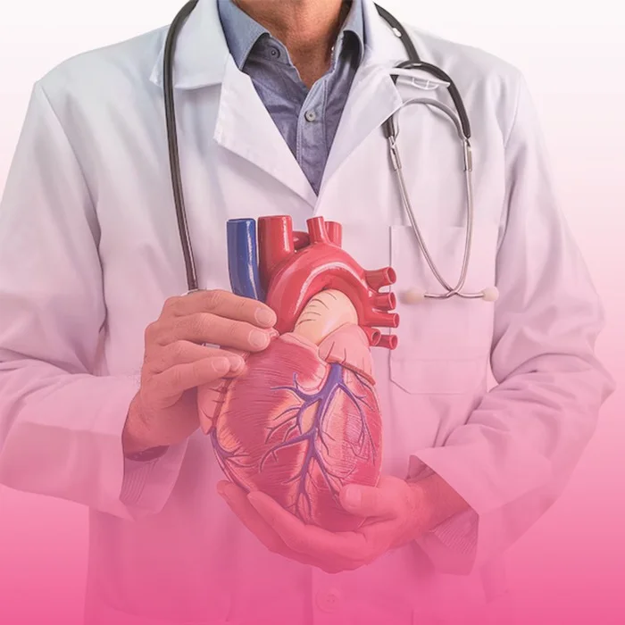
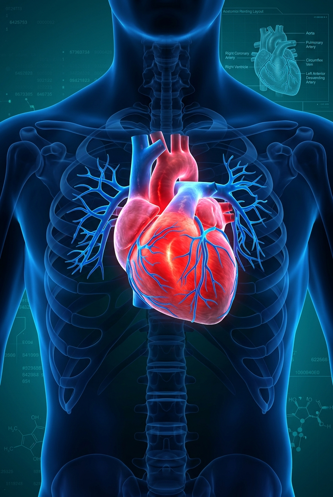

Comprehensive cardiovascular diagnosis, preventive cardiology, ECG, echocardiography, and evidence-based clinical management for heart diseases in Mysuru.
Click here to enter your details and book your appointment now.
Get in touch with us to get a second opinion from our experts.
Click here to get your queries addressed at earliest

The Cardiac Care department at Sulakshaa Hospital focuses on early identification of heart disease, hypertension management, post-cardiac event recovery, and diagnostic screening. Supported by round-the-clock intensive care telemetry, our team ensures rapid response to cardiac discomfort.

Dedicated clinical infrastructure, emergency readiness, and specialized medical technologies designed for comprehensive patient recovery.
Our team of specialist doctors is dedicated to providing expert care across a wide range of medical fields.
Find answers to common questions about consultations, diagnosis, clinical procedures, and hospital care.